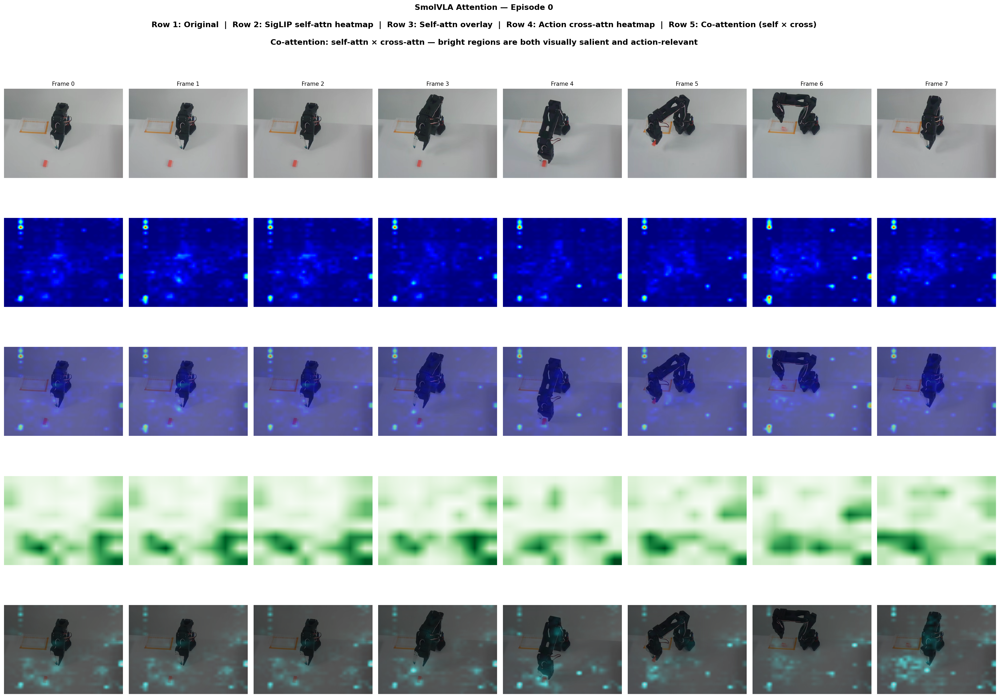

Quick inspect
RecommendedFor everyday debugging. Uses rollout attention, cross-attention, per-head grid, and viewer export.
`--method rollout`
`--cross-attention`
`--show-heads`
CLI launch UX concept
The current CLI has a small set of high-frequency choices and a large expert tail. These mocks turn the frequent path into presets, keep every flag accessible under an advanced drawer, and hand completed runs directly into the existing viewer.
Preset
For everyday debugging. Uses rollout attention, cross-attention, per-head grid, and viewer export.
Turns on GradCAM, SmoothGrad, and selected extended attribution features without making users assemble the flag stack manually.
Switches from heatmaps to spectral, entropy, and redundancy diagnostics. Hides unrelated visualization controls.
Inputs
Analysis
Always on for Quick inspect. Method defaults to rollout.
Shown as a task-level choice instead of a single obscure flag.
Collapsed behind one card. Expands only if the user needs it.
Per-step cross-attention, VLM layers, language diff, and raw flags.
Output
Advanced controls
Removes baseline subtraction for research debugging only.
Saliency, GradCAM, or both as one visible choice.
Explains the MPS to CPU fallback without making users know the workaround.
Only appears when saliency is included.
Temporal evolution of expert attention across denoising steps.
Shows what survives the compression bottleneck.
Layer chips instead of a comma-separated string field.
Keep enabled by default in the deep attribution preset.
Shows “auto alternate prompt” as a human-readable option.
For gradient-only recovery or debugging.
Review
Base on GPU preset, with exported data for the web viewer.
Task override left empty, image keys auto-detected.
Viewer-ready run folder created under `./outputs/`.
Surface practical constraints before launch instead of failing late.
The setup UI should hand off to the current run browser rather than inventing a second results surface. After completion, the primary action becomes Open in viewer.
